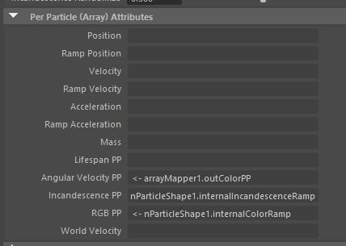
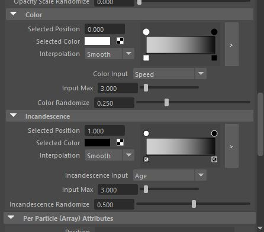
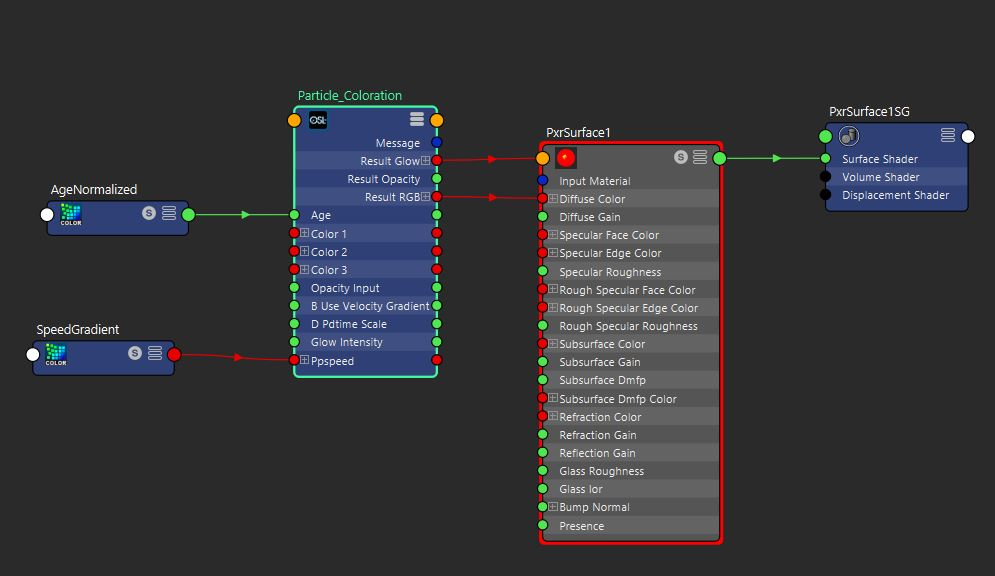

RenderMan: Pattern Animation
The graphics and notes on this page explain how custom HyperShade nodes written in the Open Shading Language can be part of shading networks that use Pixar's physically plausible materials.
The graphics and notes on this page explain how custom HyperShade nodes written in the Open Shading Language can be part of shading networks that use Pixar's physically plausible materials.
My goal with this project was to create shader animation for a particle system that was driven Per Particle Attributes of the emitter. The idea was to control the color and incandescence of the particles based on their speed and Age.
To access the per particle attributes in hypershade we first, need to add them to the particleshape node,then we need to assign them a ramp inside the particle shape attributes, once that is done, we can access these ramp values inside hypershade with the PxrPrimvar node and use it to drive per particle colors.
 The Hypershade is quite simple we have two PxrPrimvar nodes that feed the Normalized Per Particle Age and the Per Particle Velocity to the custom OSL Node. You can find mor information on the PrimVars here
The Osl node takes the per particle primvars as inputs and uses them to colorise the particles, I added the option for the artist to choose 3 Colors that will make up the color ramp of the shader.It also has an option to switch the coloration based on the particles Age or the Particles Speed. The Incandescence of the particels are age based.
I think the hardest part of this project was jsut finding information on what I was trying to do. Also my unfamiliarity with maya's particle systems made things a little challenging as well, it came down to trying to figure out the variable names that i would need to access the particle attributes in hypershade. I ended spending soo much time researching these variables I was unable to spend as much time as I would have liked on the actual OSL, but now that I ahve the fundamentals down, moving forward it should be much easier to wrangle with maya's particle systems.
{kind=link}
{kind=link}
{kind=link}
{kind=link}